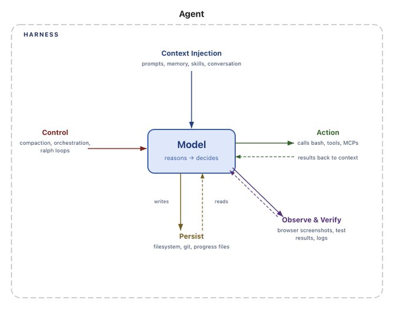
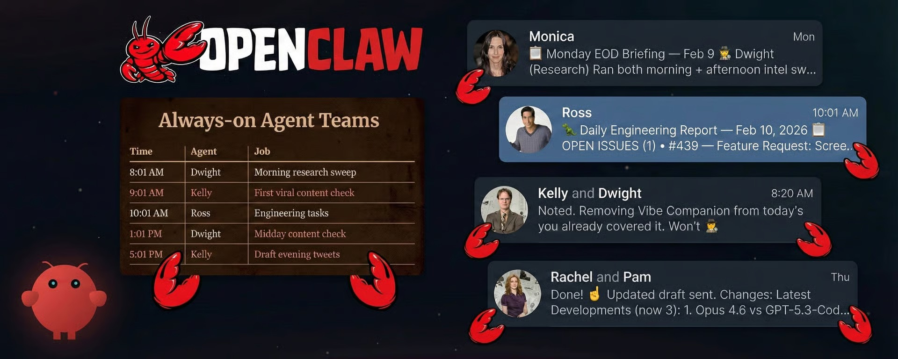
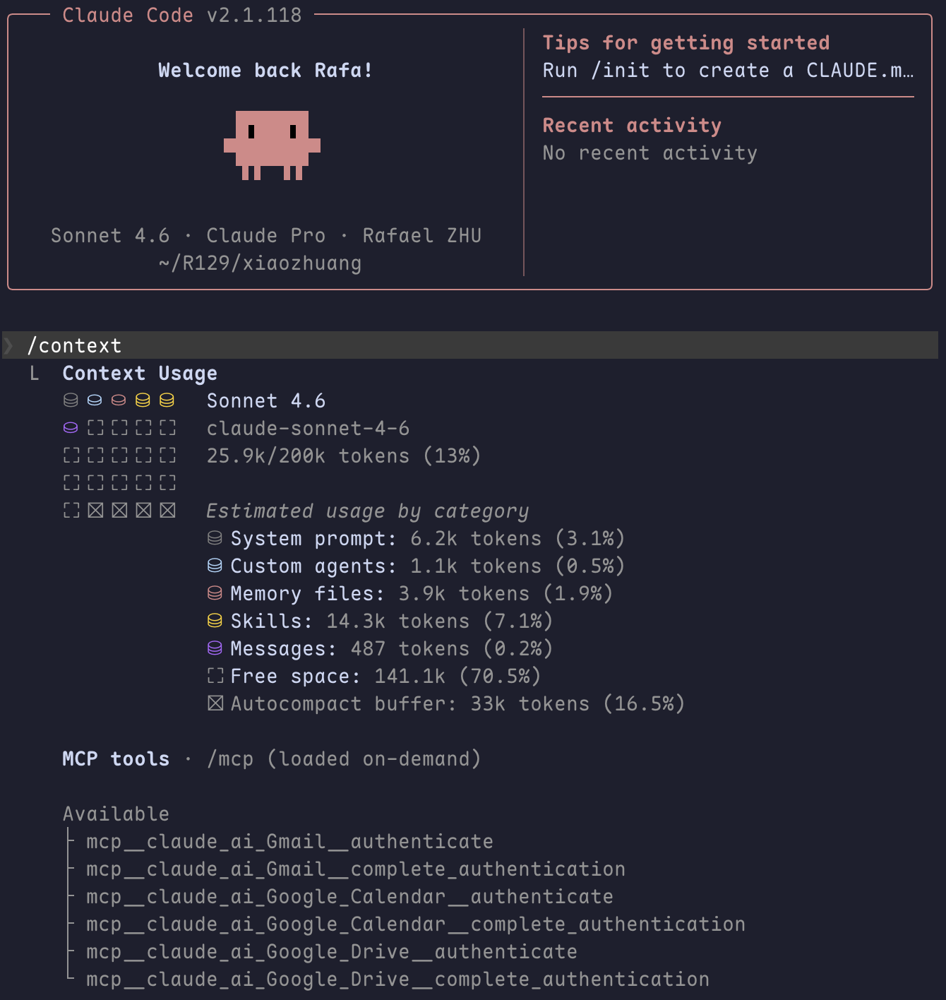
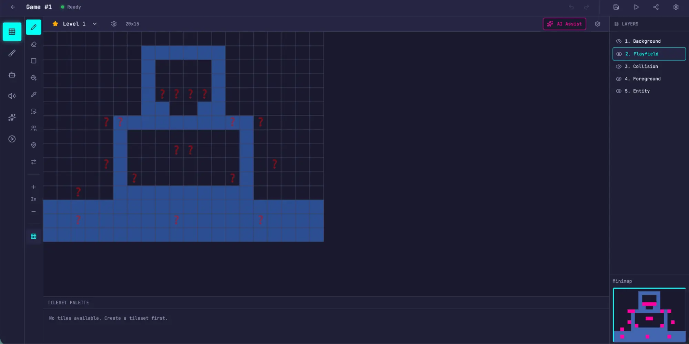
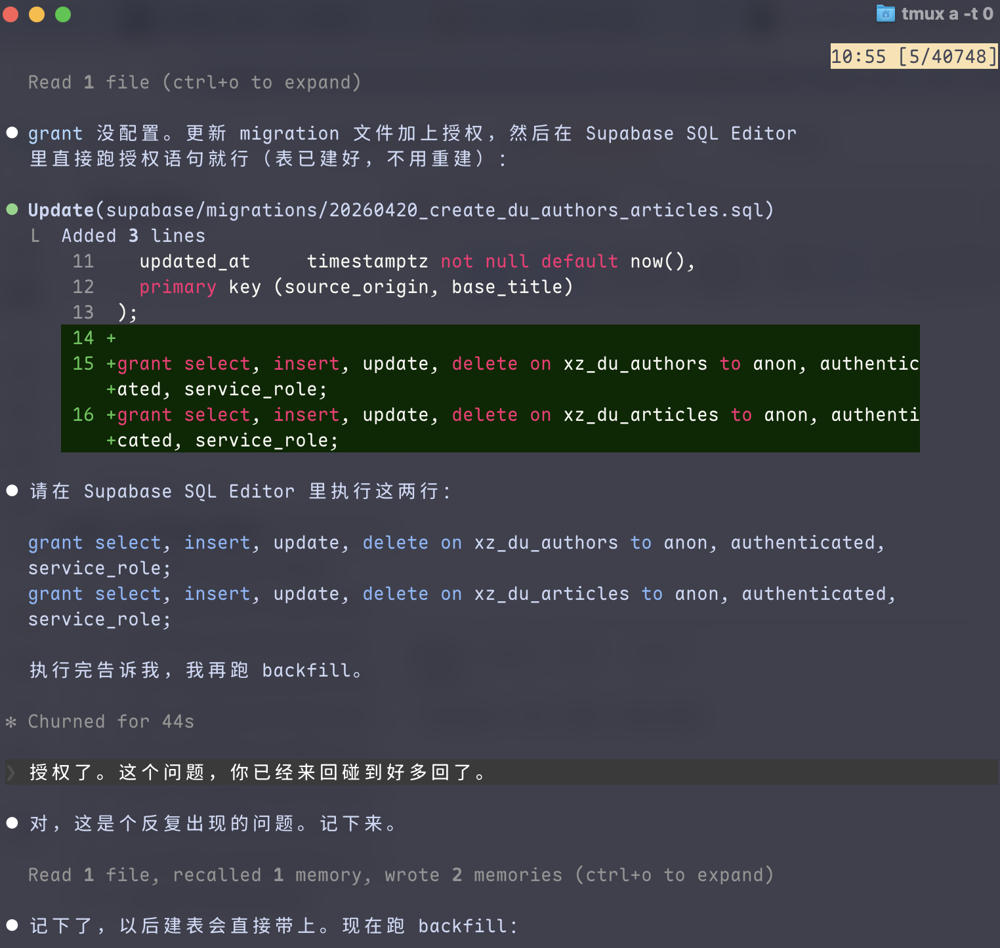
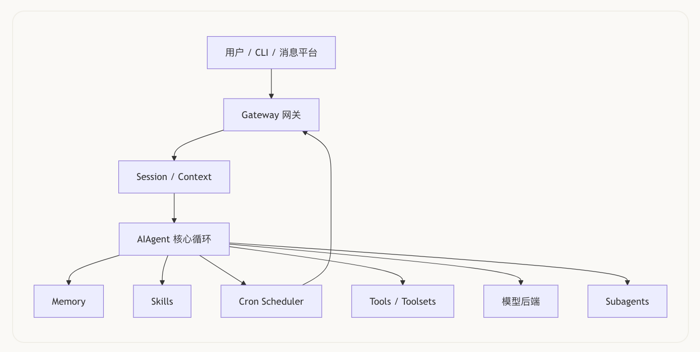
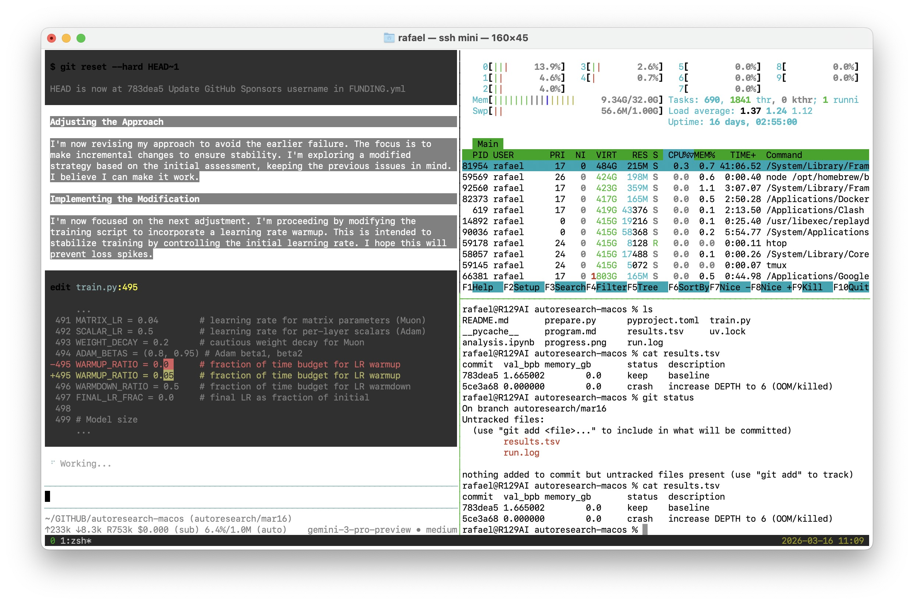
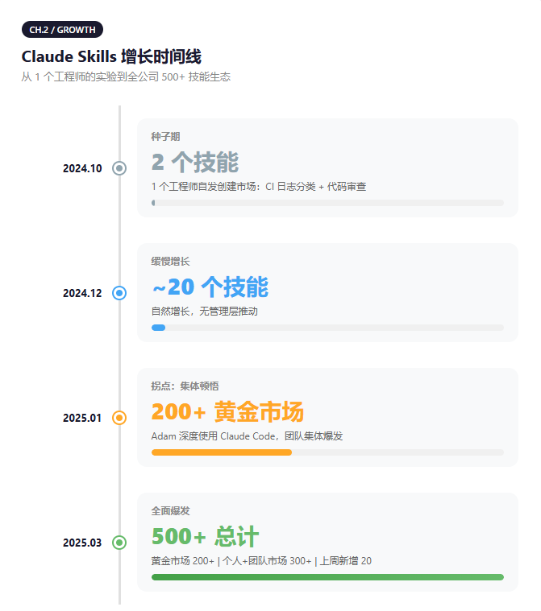
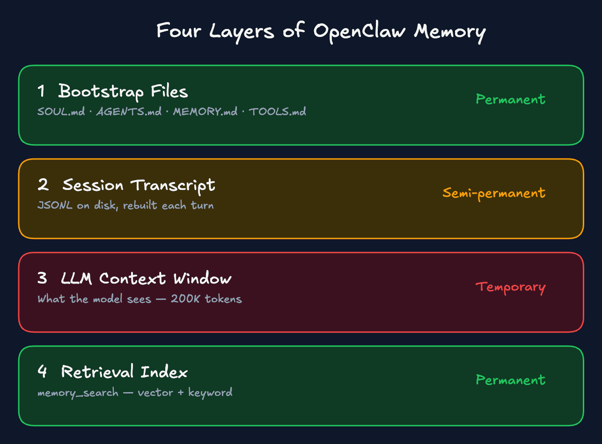

一场关于 AI 运行环境的演讲
2026 年 AI 工程师的核心议题 ——
四层递进实践 · 自主循环终态 · 企业治理范式 · 六个判断
开场隐喻

Harness = Model 外围的完整运行环境一道门 · 两种用法
输入问题 → 输出答案
世界不变。
文件被修改，代码被运行，状态改变。
世界变了。
Harness 是跨越这道门的关键。今天的演讲，就是拆开它。

OpenClaw · 7×24 在线的 Agent 团队Harness 解剖 · 全局地图
这张地图是本章的骨架。接下来逐一展开。
维度一
"你的 context 窗口是不可再生的。"
维度二
维度三 · 最被忽视，也最关键
最稀缺的能力，不是让 AI 生成更多，而是让 AI 知道"更多"里哪些是好的。
维度四
PLAN.md · TODO.md · AGENTS.md · program.md维度五
架构原则一
Markdown 过程文件，编码判断力与领域知识。价值的 90% 在这里。每次模型升级，Skills 自动变强。
~200 行代码。运行模型循环 · 读写文件 · 管理 context · 强制安全边界。仅此而已。
你的应用层。SQL · 编译代码 · API 调用。相同输入永远相同输出。
反面：Fat harness —— 40+ 工具定义吃掉半个 context 窗口，MCP round-trip 2–5 秒。
架构原则二
Skill as method call
/investigate(TARGET, QUESTION, DATASET)Latent vs. Deterministic
CLAUDE.md 从 20,000 行 → 200 行指针，按需加载可见性不是加出来的，是减出来的。

/context · 你的 context 里装了什么，一目了然极简方案
| 工具 | 作用 |
|---|---|
read | 读文件 |
write | 写文件 |
edit | 局部编辑 |
bash | 执行一切 |
对比：Claude Code 数万 token。2026 年的前沿模型天生懂 coding agent，不需要长操作手册。
砍掉一切不透明的状态
PLAN.md · TODO.md后台进程没有可见性。Mario 的解法是 tmux —— 因为 tmux 是你能看见的。Harness 系列 · 篇 4
20 倍成本，100 倍质量。这不是砸钱，是系统设计。

AI 生成关卡 · Try Another / Discard —— Generator-Evaluator 的直观呈现刻薄的质检员
第 10 轮迭代，Evaluator 自主决策引入一个从未要求过的交互设计。
先协商，再开工
把"什么叫完成"从感觉变成机械可验证的标准。
诚实承认
AI 没有品味，只有频率识别。

Claude Code 终端实况 · Agent 操作完全可见、可追溯第二类 Agent
Knowledge as Code
AGENTS.md 100 行地图 + 分层 README约束的悖论
约束是让 AI
能快速移动
而不腐烂的护栏。

用户/CLI → Gateway → Session/Context → AIAgent 核心循环 → 六大能力层自我改进闭环
用户画像 · 工作偏好 · 历史决策。每次对话结束后自动沉淀。
把一次性操作变成可复用流程。这就是 Garry Tan 说的 Fat Skills 层。
定时运行 Skill，结果投递回平台。不用开口，系统自己跑。
三者形成闭环：执行 → Skills 沉淀 → Cron 自动运行 → Memory 更新 → 下次更精准。这不是功能堆叠，是自我改进机制。
从实践到自主
接下来看两个人是怎么做到的。
program.md —— 目标train.py —— 行动prepare.py —— 评估
autoresearch 实况 · Mac Mini M4 · 一晚 80+ 轮 · 对标 H100Karpathy 在 Mac Mini 上做的事，Shopify 在 CI pipeline 上做了一遍。
三阶段循环
预编译步骤重复了 Storybook 本来会做的工作。
处理 580 个文件，实际只需变换 105 个。
企业范式 · 另一个问题
前三章是"一个 harness 怎么设计和运行"。这一章是另一个层面：多个 harness 在组织里如何不腐烂、不失控、还能自我繁殖？
企业案例：Uber
| 时间 | 状态 |
|---|---|
| 2024 年 10 月 | 2 个 Skills：CI 日志分类 / 基础代码审查 |
| 2024 年 12 月 | 约 20 个 |
| 2025 年 1 月 | 团队开始认识到实用价值 |
| 2025 年 3 月 | 200+ 精选 Skills · 300+ 实验性工具 |
没有顶层设计，没有全公司推广令。只是真的省了时间。

Uber · Claude Skills 增长时间线 · 2024.10 → 2025.03组织级 Harness 的核心架构决策
| Golden Marketplace | Personal Sandbox | |
|---|---|---|
| 加载方式 | 自动加载 | URL 手动加载 |
| 治理 | 严格：Code Review + CI/CD + LLM-as-Judge | 无限制，快速迭代 |
| 规模 | 100–200 核心 Skills | 300+ 实验性工具 |
| 作用 | 保证一致性与质量 | 保护创造力与探索 |
两层同时存在 —— 合并会同时扼杀规范性和创造力。
规模化的四个条件
从 Uber 案例提取
企业案例：Ramp · 金融自动化
一杯咖啡的 15 分钟行政时间 → 接近零。
从卡费、发票到对账，全链路 Agent 化。
上下文工程 · 正确性定义
阻止 51 万笔违规交易
节省约 $2.9 亿
信任 · 自主性是赢得的，不是设计的
AI 不只省时间，它把"值得去做"的边界往外推。软件永远处于没完成的状态。
我们的判断 · 关于 Harness 设计质量
不稳定的根源通常不是模型，是反馈回路缺失。
去掉看不见的工具 > 加监控。加法只是让黑箱更大。
任何声称完全自动化的方案，都值得追问这一点。
20 年企业 IT 经验，校准两三年 AI 经验。
我们的判断 · 关于规模与务实
cron > 调度框架 · 文件 > 数据库。
复杂度本身就是成本。
所有方案都是外部存储模拟持久记忆。最务实的做法：接受不完美，选文件不选数据库。
这两个判断都是在说同一件事：在不确定性面前，选简单的那个。

Four Layers of OpenClaw Memory · 所有记忆方案都是外部存储的组合判断 06 · 终极判断
19.1s → 12.4s。自主循环在没有人干预的情况下找到了人工找不到的优化点。
2 → 500+ Skills，五个月，无顶层设计令。自下而上生产，自上而下治理。
从"建议模式"到用户主动要求自动化。信任不是设计出来的，是用出来的。
三个案例，同一个终态：设计时治理，运行时自由。
这周就能做
找一个可机械评估的流程，跑 autoresearch loop，感受 LOOP FOREVER。
检查你现在的工具集。哪些可以合并或删除？目标：context 里的工具定义 < 1,000 token。
找一件你反复做的事，把它写成 skill。如果在团队：想清楚哪三个 Skill 值得进 Golden。
三个实验对应三个章节：自主循环 · 架构原则 · Fat Skills。同一套哲学的三种入口。加分项：找一个高频痛点，从"建议模式"开始，看用户什么时候主动要求自动化。
从架构到组织 · 形态不同，底层相同
从诚实开始，harness 自然会生长。